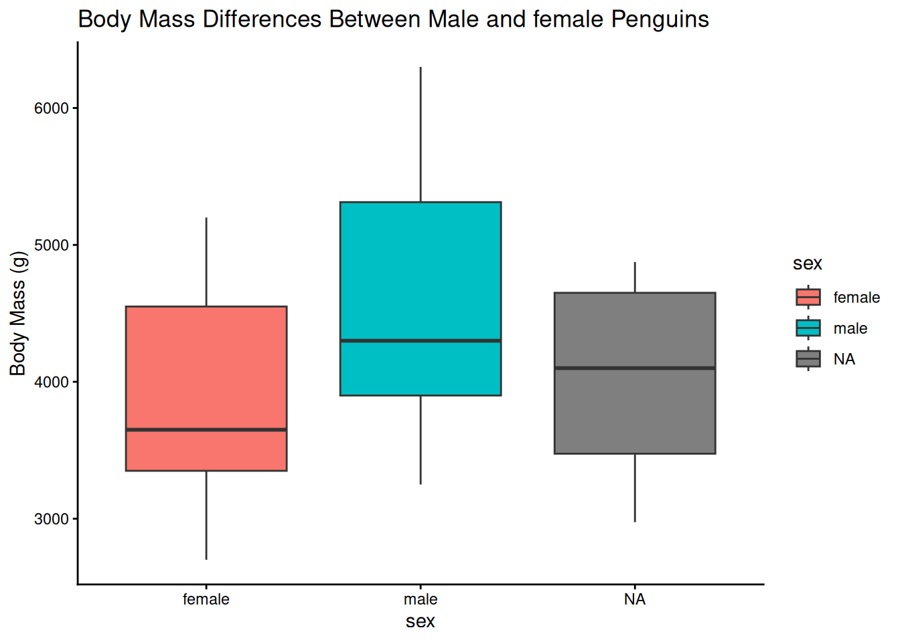
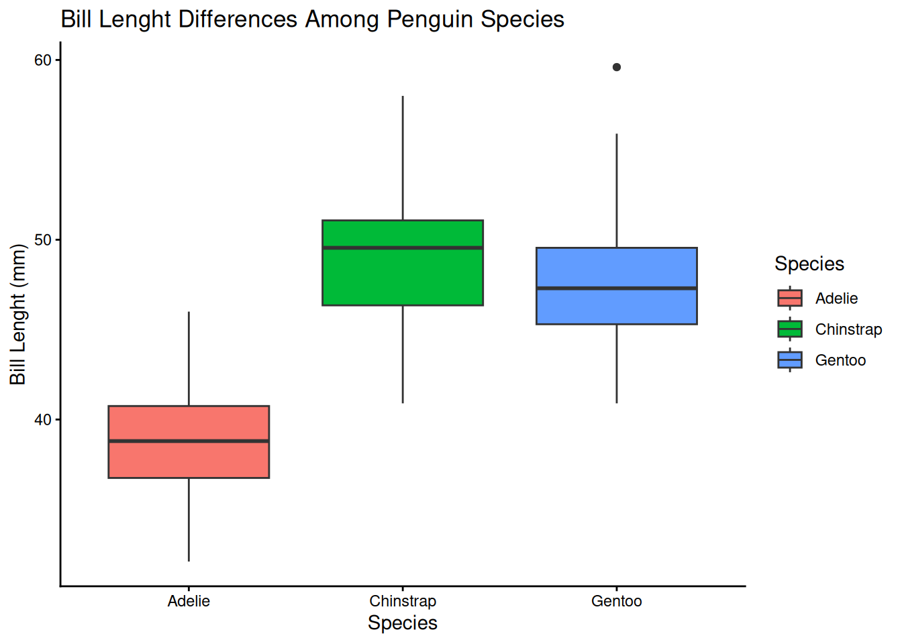
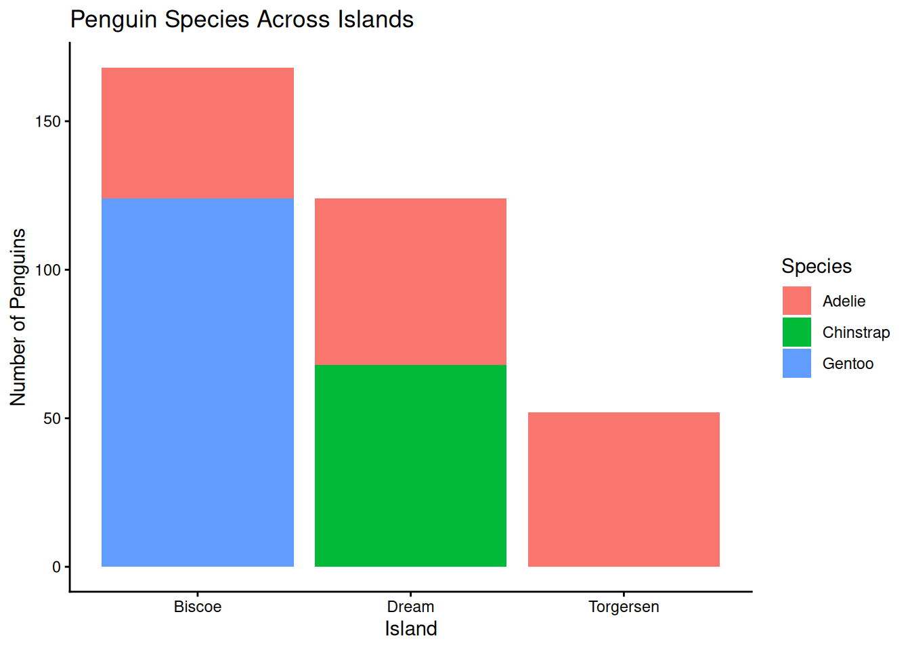
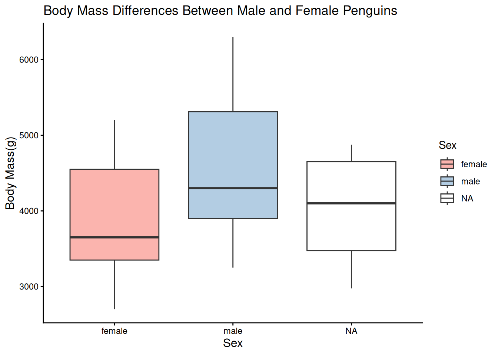
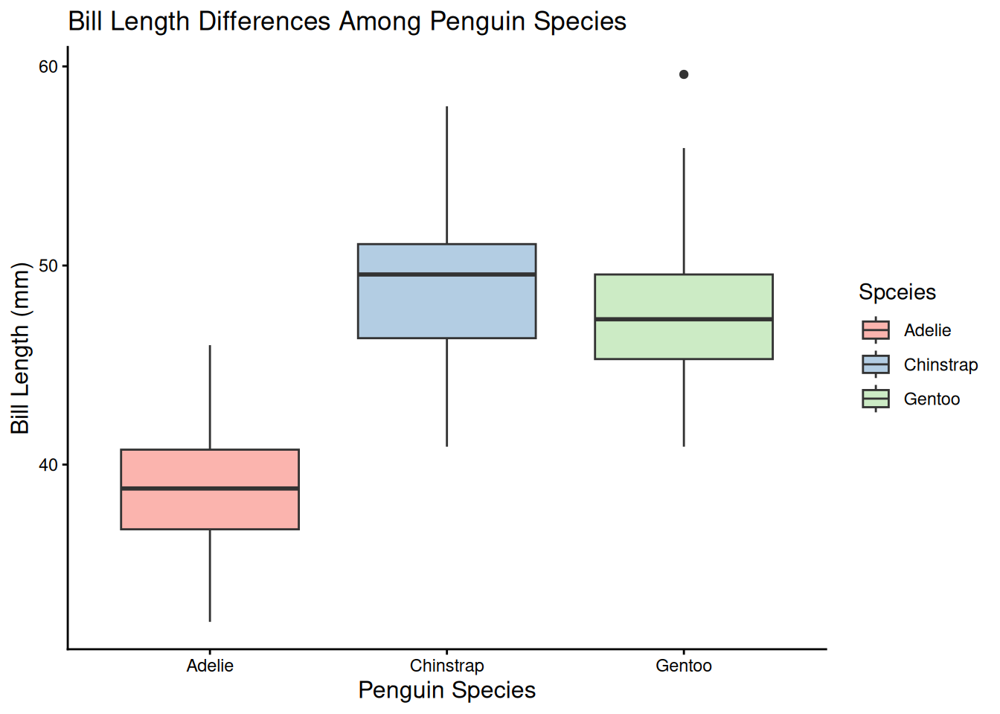
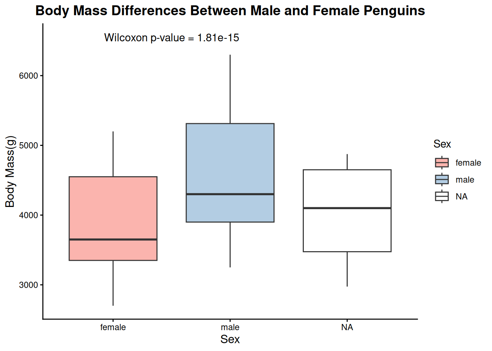

This study examines the ecological sexual dimorphism among three co-existing Antarctic penguin species in relation to changing winter sea ice condition. Sexual dimorphism is the difference in body size and foraging habits between sexes. The three co-existing species are Adelie, Chinstrap and Gentoo penguins. Some of the key findings was the size difference; the males are structurally larger than females across all three species. When the body mass is excluded, the Chinstraps are the most sexually dimorphic species. From all three species, the Chinstrap and Gentoo penguins show sex-specific foraging niches. In these both species the males are slightly enriched in nitrogen isotopes, which indicates they feed at a slightly higher trophic level than females. The annual variations in sea ice can alter what the penguins eat. The Adelie penguin diets are the most tightly linked to sea ice levels, while Chinstrap diets are the least affected. It was also noticed that see conditions do not alter the foraging differences between males and females in any of the three species. Th extend of a species’ structural size difference between sexes corresponds directly to how differently they forage. However, because the dietary gaps between males and females are small, both sexes within each species are expected to respond similarly to future climates and habitat alterations in the Southern Ocean.
Exploratory analysis
1. How many data columns are in ‘penguins’?
#Find the number of columns in the penguin data set. ncol(penguins)
[1] 8
#Check the data types of every column str(penguins)
tibble [344 × 8] (S3: tbl_df/tbl/data.frame)
$ species : Factor w/ 3 levels "Adelie","Chinstrap",..: 1 1 1 1 1 1 1 1 1 1 ...
$ island : Factor w/ 3 levels "Biscoe","Dream",..: 3 3 3 3 3 3 3 3 3 3 ...
$ bill_length_mm : num [1:344] 39.1 39.5 40.3 NA 36.7 39.3 38.9 39.2 34.1 42 ...
$ bill_depth_mm : num [1:344] 18.7 17.4 18 NA 19.3 20.6 17.8 19.6 18.1 20.2 ...
$ flipper_length_mm: int [1:344] 181 186 195 NA 193 190 181 195 193 190 ...
$ body_mass_g : int [1:344] 3750 3800 3250 NA 3450 3650 3625 4675 3475 4250 ...
$ sex : Factor w/ 2 levels "female","male": 2 1 1 NA 1 2 1 2 NA NA ...
$ year : int [1:344] 2007 2007 2007 2007 2007 2007 2007 2007 2007 2007 ...
#Exaple of columns representing each data type: #Numeric: bill_lenght_mm#Integer: year#Factor: island
2. Provide the name of a column for each data type in the data set.
#Display an example of each data type in the penguin dataset.#Factorclass(penguins$species)
[1] "factor"
#Numericclass(penguins$bill_len)
Warning: Unknown or uninitialised column: `bill_len`.
[1] "NULL"
#Integerclass(penguins$year)
[1] "integer"
3. How many penguins do we have data for?
#Count the total numer of penguins in the dataset.nrow(penguins)
[1] 344
4. Do we have equal representations of males and females in the data set?
#Create a dataframe containing only male penguins.pmale <-subset(penguins, sex =="male")#Create a dataframe containing only female penguins.pfemale <-subset(penguins, sex =="female")#Count the number of penguins in each dataframe. nrow(pmale)
[1] 168
nrow(pfemale)
[1] 165
#Compare the numbers table(penguins$sex)
female male
165 168
5. Do we have equal reprensentation of each species in the data set?
#Create a dataframe containing only Adelie penguins.pAdel <-subset(penguins, species =="Adelie")#Create a dataframe containing only Chinstrap penguins.pChin <-subset(penguins, species =="Chinstrap")#Create a dataframe containing only Gentoo penguins.pGen <-subset(penguins, species =="Gentoo")#Count the number of penguins in each dataframe.nrow(pAdel)
[1] 152
nrow(pChin)
[1] 68
nrow(pGen)
[1] 124
#Compare the representations of each species of each speciestable(penguins$species)
Adelie Chinstrap Gentoo
152 68 124
6. Do we have equal reprensentation of each island in the data set?
#Create a dataframe containing only penguins from Biscoe island.iBis <-subset(penguins, island =="Biscoe")#Create a dataframe containing only penguins from Dream island.iDream <-subset(penguins, island =="Dream")#Create a dataframe containing only penguins from Torgersen island.iTorg <-subset(penguins, island =="Torgersen")#Count the number of penguins in each dataframe.nrow(iBis)
[1] 168
nrow(iDream)
[1] 124
nrow(iTorg)
[1] 52
#Compare the representations of each islandtable(penguins$island)
Biscoe Dream Torgersen
168 124 52
Data Visualization
1. Use the ggplot package to create plots that help show the following and use at least two distinct types of plots.
a. What measures values in the data set most clearly distingush male and female penguins?
b. What measured values in the data set most clearly distinguish each of the species of penguins?
c. Which penguins species inhabit each of the Antartic island sites?
#Finla sexggplot(data = penguins, aes(x = sex, y = body_mass_g, fill = sex)) +geom_boxplot() +labs( title ="Body Mass Differences Between Male and female Penguins", x ="sex", y ="Body Mass (g)", fill ="sex") +theme_classic()
Warning: Removed 2 rows containing non-finite outside the scale range
(`stat_boxplot()`).

#Final speciesggplot(data = penguins, aes(x = species, y = bill_length_mm, fill = species)) +geom_boxplot() +labs( title ="Bill Lenght Differences Among Penguin Species", x ="Species", y ="Bill Lenght (mm)", fill ="Species") +theme_classic()
Warning: Removed 2 rows containing non-finite outside the scale range
(`stat_boxplot()`).

#Show the number of penguins of each species on each island.ggplot(penguins, aes(x = island, fill = species)) +geom_bar() +labs( title="Penguin Species Across Islands", x ="Island", y ="Number of Penguins", fill ="Species") +theme_classic()

2. For the final plots, use at least two additional style functions to update the visual appeal of your graphic. The design choice is yours; refer back to our guidelins for visual representation of quantitative data for help with using goos design principles.
ggplot(data = penguins, aes(x = sex, y = body_mass_g, fill = sex)) +geom_boxplot() +labs( title ="Body Mass Differences Between Male and Female Penguins", x ="Sex", y ="Body Mass(g)", fill ="Sex") +scale_fill_brewer(palette ="Pastel1") +theme_classic() +theme(plot.tittle =element_text(size =14, face ="bold", hjust =0.5), axis.title =element_text(size =12), legend.position ="right")
Warning: Removed 2 rows containing non-finite outside the scale range
(`stat_boxplot()`).
Warning in plot_theme(plot): The `plot.tittle` theme element is not defined in
the element hierarchy.

ggplot(data = penguins, aes(x = species, y = bill_length_mm, fill = species)) +geom_boxplot() +labs(title ="Bill Length Differences Among Penguin Species", x ="Penguin Species", y ="Bill Length (mm)", fill ="Spceies") +scale_fill_brewer(palette ="Pastel1") +theme_classic() +theme(plot.tittle =element_text(size =14, face ="bold", hjust =0.5), axis.title =element_text(size =12), legend.position ="right")
Warning: Removed 2 rows containing non-finite outside the scale range
(`stat_boxplot()`).
Warning in plot_theme(plot): The `plot.tittle` theme element is not defined in
the element hierarchy.
Statistical Support
1. For ‘FINALsex’ and ‘FINALspecies’, add an appropriate statistical test to your code chunk.
ggplot(data = penguins, aes(x = sex, y = body_mass_g, fill = sex)) +geom_boxplot() +labs( title ="Body Mass Differences Between Male and Female Penguins", x ="Sex", y ="Body Mass(g)", fill ="Sex") +scale_fill_brewer(palette ="Pastel1") +theme_classic() +theme(plot.tittle =element_text(size =14, face ="bold", hjust =0.5), axis.title =element_text(size =12), legend.position ="right")
Warning: Removed 2 rows containing non-finite outside the scale range
(`stat_boxplot()`).
Warning in plot_theme(plot): The `plot.tittle` theme element is not defined in
the element hierarchy.
#Statiatical test comparing male and female body masswilcox.test(body_mass_g ~ sex, data = penguins)
Wilcoxon rank sum test with continuity correction
data: body_mass_g by sex
W = 6874.5, p-value = 1.813e-15
alternative hypothesis: true location shift is not equal to 0
The Wilcoxon rank sum test was used to compare body mass between male and female penguins. The independent variable was sex and the dependent variable was body mass in grams. The test produced a p-value that indicates whether the body mass distributions differ between the two groups. If the p-value is less than 0.05, the difference is statistically significant, which suggest that the body mass distributions difference between male and female penguins.
ggplot(data = penguins, aes(x = species, y = bill_length_mm, fill = species)) +geom_boxplot() +labs(title ="Bill Length Differences Among Penguin Species", x ="Penguin Species", y ="Bill Length (mm)", fill ="Spceies") +scale_fill_brewer(palette ="Pastel1") +theme_classic() +theme(plot.tittle =element_text(size =14, face ="bold", hjust =0.5), axis.title =element_text(size =12), legend.position ="right")
Warning: Removed 2 rows containing non-finite outside the scale range
(`stat_boxplot()`).
Warning in plot_theme(plot): The `plot.tittle` theme element is not defined in
the element hierarchy.

#Statistical test comparing bill length among penguin specieskruskal.test(bill_length_mm ~ species, data = penguins)
Kruskal-Wallis rank sum test
data: bill_length_mm by species
Kruskal-Wallis chi-squared = 244.14, df = 2, p-value < 2.2e-16
The Kruskal-Wallis test was used to compare body mass among Adelie, Chinstrap and Gentoo penguins. The independent variable was species, and the dependent variable was body mass in grams. The test produces an H statistic and ap-value. The H statistic reflects differences in the ranks of body mass amoung the species, while the p-value indicates whether the differences are statistically significant. If the p-value is less than 0.05, at least one species has a different body mass distribution from others.
2. Using the information from your statistical test, add a statistical feature to your plot. This could be a text that denotates statistically significant values, a regression line that fits the data with its formula and R^2 value, or something else.
#Calculate Wilcoxon test p-valuesex_test <-wilcox.test(body_mass_g ~ sex, data = penguins) sex_p_value <- sex_test$p.valueggplot(data = penguins, aes(x = sex, y = body_mass_g, fill = sex)) +geom_boxplot() +labs( title ="Body Mass Differences Between Male and Female Penguins", x ="Sex", y ="Body Mass(g)", fill ="Sex") +scale_fill_brewer(palette ="Pastel1") +annotate( "text", x =1.5, y =max(penguins$body_mass_g, na.rm =TRUE)+250, label =paste("Wilcoxon p-value =", signif(sex_p_value, 3))) +theme_classic() +theme(plot.title =element_text(size =14, face ="bold", hjust =0.5), axis.title =element_text(size =12), legend.position ="right")
Warning: Removed 2 rows containing non-finite outside the scale range
(`stat_boxplot()`).

#Display statistical test resultssex_test
Wilcoxon rank sum test with continuity correction
data: body_mass_g by sex
W = 6874.5, p-value = 1.813e-15
alternative hypothesis: true location shift is not equal to 0